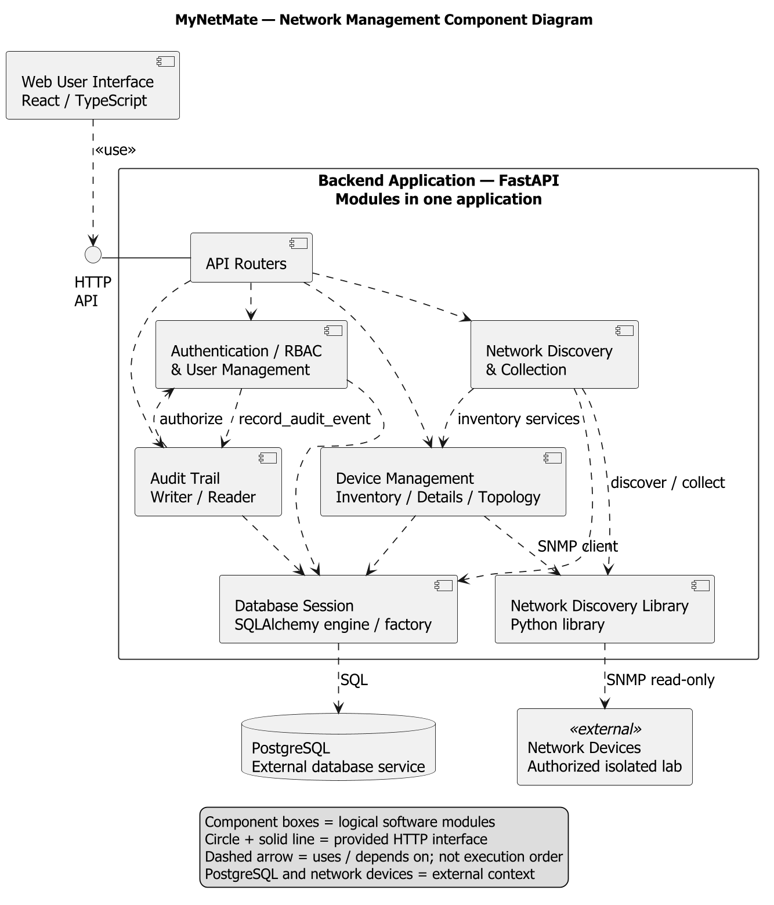
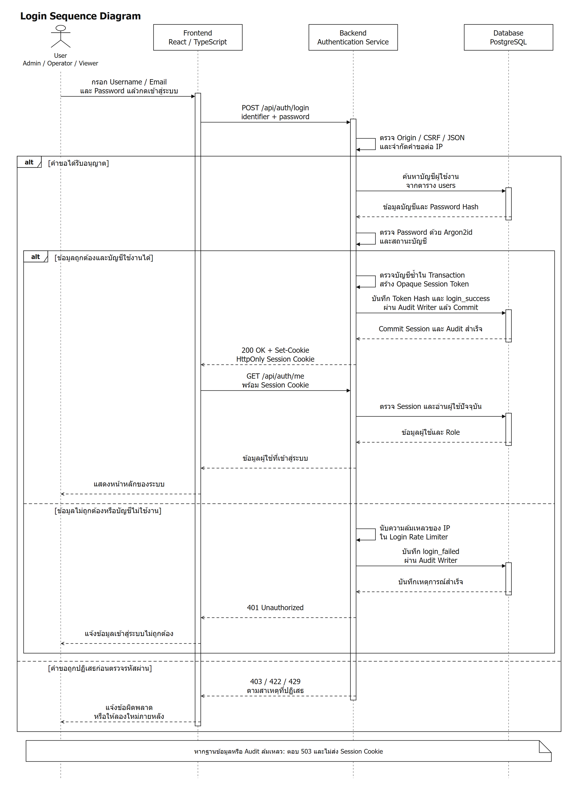
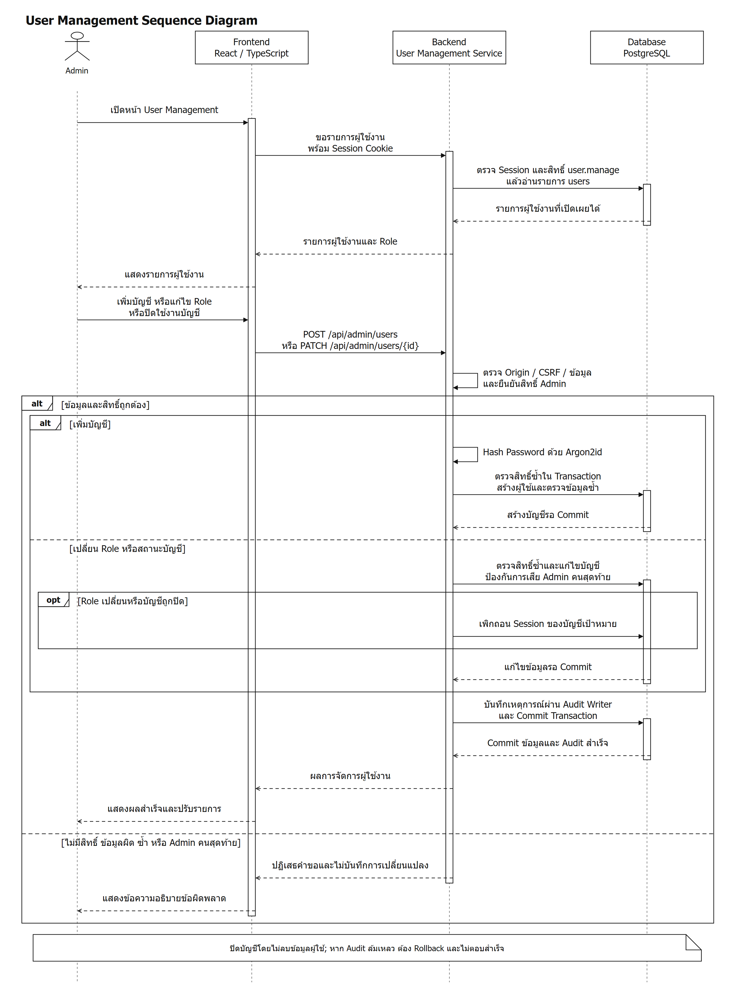
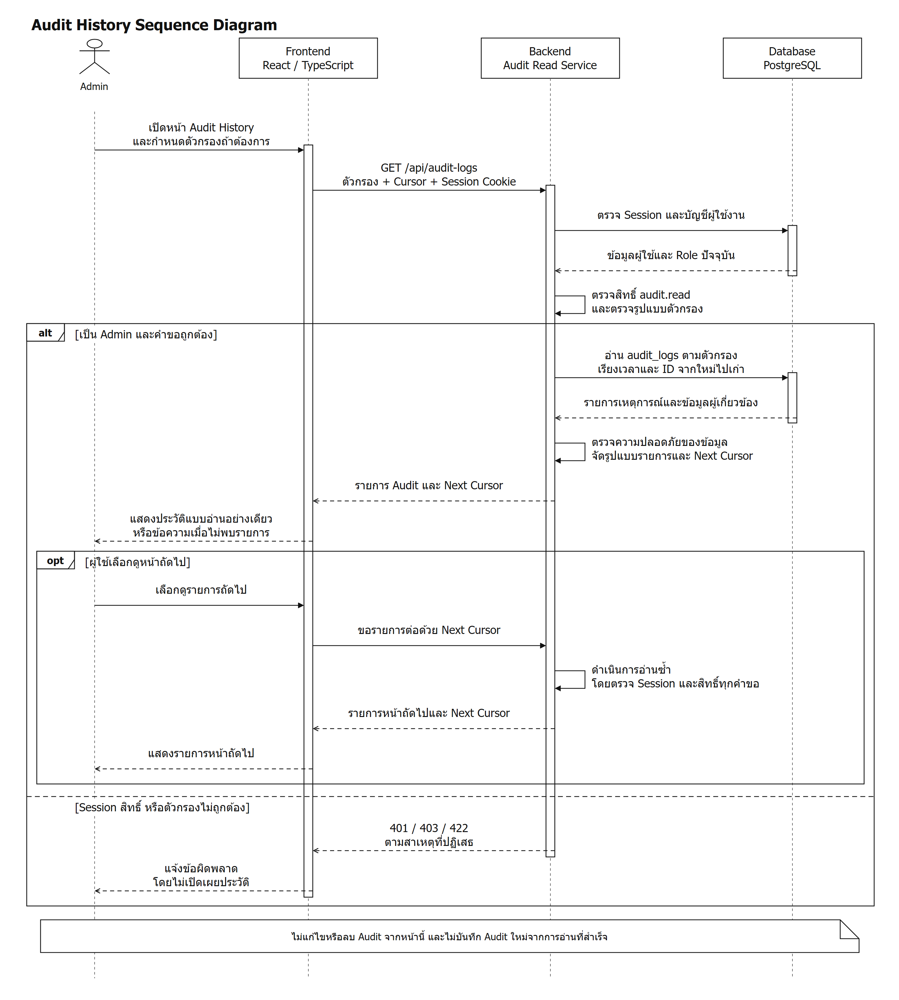
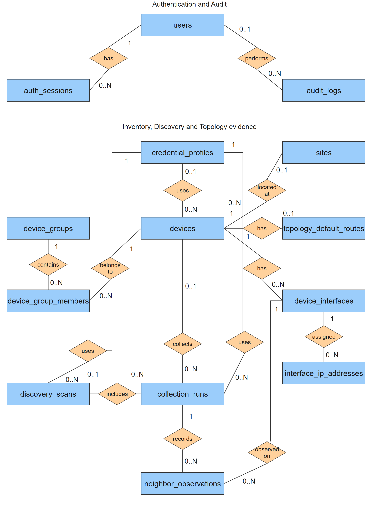
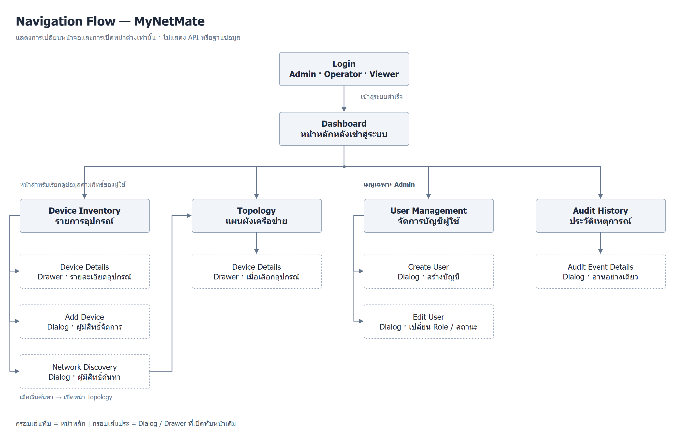
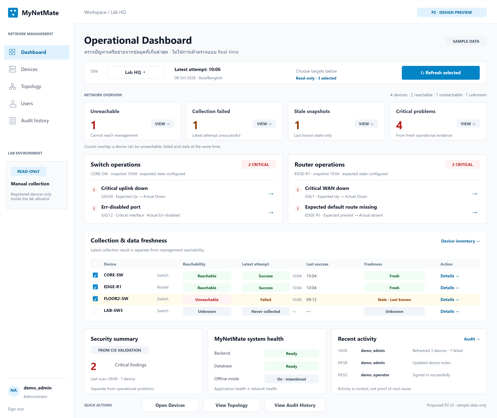

MyNetMate — เนื้อหาให้นภัทรอัปเดตอาจารย์ วันที่ 9 ตุลาคม 2569
ผู้นำเสนอและผู้พัฒนางาน Implementation ที่เล่าในเอกสารนี้: นภัทร
ตรวจหลักฐานวันที่ 9 ตุลาคม 2569 (Asia/Bangkok) เปรียบเทียบกับรายงานครั้งที่ 3 และใช้รายงานครั้งที่ 4 เป็นข้อมูลล่าสุด ไม่ประเมินเปอร์เซ็นต์ความสำเร็จแทนทีม
ประเด็นที่จะให้อาจารย์จำ: จากโมดูลพื้นฐาน มาเป็นโค้ดที่เชื่อมหน้า Login/My Account, การจัดการบัญชี และประวัติเหตุการณ์กับบริการ Backend แล้ว ผล Unit ผ่านตามขอบเขตที่เลือก แต่ Build Frontend จากสำเนาใหม่ยังไม่ผ่าน และยังต้องยืนยันการรวมระบบกับ PostgreSQL และ Browser รวมถึงเชื่อมสิทธิ์กับ API งานอุปกรณ์ให้ครบ ส่วน Dashboard พื้นฐานและ P2 Operational Monitoring ยังอยู่ระหว่างแบบออกแบบและแผนพัฒนา [E02–E08]
เปิดอ่านเอกสารนี้ใน Markdown Preview/Obsidian ได้ ภาพเป็น PNG ที่เตรียมไว้แล้ว จึงไม่ต้องพึ่งบริการ Render ภายนอก สำหรับเปิดเล่าและขยายภาพสะดวก ใช้ หน้าอ่านพร้อมภาพ และแก้ภาพผ่านไฟล์ใน โฟลเดอร์ editable
ปรับตามเอกสารเพิ่มเติม: ใช้ Component Diagram ที่เพิ่มในบทที่ 3 เป็นภาพ A สำหรับเปิดเล่าโครงสร้าง เฉพาะ Network Management ไม่รวม P2 หรือ Configuration Management พร้อมคำอธิบายจุดเชื่อมของ Auth/Users/Audit ภาพนี้แสดงโมดูลภายใน Backend แอปเดียว ไม่ใช่บริการแยกกล่องละตัว และไม่ใช่ผลทดสอบระบบ ส่วน Dashboard/P2 ในเอกสารอัปเดตนี้ยังแยกไว้เฉพาะแบบและแผนทำต่อจากคำขอเดิม [E16]
1. ขอบเขตผลงานและการอ่านสถานะ
| สถานะ | ความหมายในเอกสารนี้ |
|---|---|
| ออกแบบแล้ว | มีข้อกำหนด Contract/Diagram/Wireframe; ยังไม่ยืนยันพฤติกรรมของระบบ |
| พัฒนาแล้ว | พบโค้ดที่ทำพฤติกรรมนั้นและตรวจเส้นทางเรียกใช้แล้ว; ยังไม่เท่ากับพร้อมใช้งานจริงครบ |
| ทดสอบแล้ว | มีผลรันรอบนี้ โดยระบุชนิดและขอบเขตของ Test แยกกัน |
| วางแผนทำต่อ | ยังเหลืองานหรือข้อตกลงที่ต้องทำก่อนรับรองความสามารถ |
- นับเป็นงานพัฒนาของนภัทร: Authentication/RBAC foundation และการเชื่อม Auth API/UI, User Management, Audit Writer/Reader และ Audit History UI; รายงานครั้งที่ 4 และ Commit
NaphatJaสนับสนุนการแบ่งงานนี้ [E02, E03] - งานออกแบบ/แผนของนภัทร: Dashboard & Monitoring และแนวทาง P2; พบเอกสารในกลุ่ม
(Naphat)แต่ปัจจุบัน Dashboard ยังเป็นหน้า Placeholder [E08] - งานเพื่อน ใช้เล่าเฉพาะบริบท: Inventory, Discovery/Collection และการปรับ Topology ที่พบ Commit ของ
Chatnarint Boonsaeng; ไม่อ้างว่านภัทรพัฒนา Collector, การเก็บ Snapshot หรือการแก้ Default Route เหล่านี้ [E03, E09] - รอยืนยันผู้จัดทำเป็นรายชิ้น: Architecture, Component Diagram, Activity, ER, Navigation/Wireframe และ Mockup P2 เป็นชิ้นงานเอกสารร่วม/ชิ้นงานใน Workspace ซึ่งชื่อโฟลเดอร์เพียงอย่างเดียวไม่พิสูจน์ผู้วาดทุกภาพ; Topology เดิมมีทั้งงานออกแบบของนภัทรและการปรับ Implementation ของเพื่อน ต้องแยกก่อนอ้างผลงานเฉพาะบุคคล
ขอบเขตระบบยังยึด P1 ก่อน P2: Flow เป้าหมายรวมของทีมคือ Login → Add Device → Config Builder → Preview → CIS Scan → Plan/Apply Modal ไม่รับรองว่าทั้ง Flow ผ่าน End-to-End แล้วจากความก้าวหน้าของ Auth เพียงส่วนเดียว P1 ยังไม่ Push SSH จริง และการเก็บข้อมูลเครือข่ายต้องจำกัดใน Isolated Lab [E01]
2. สรุปเปิดการอัปเดตประมาณ 1 นาที
รอบนี้งานของผมขยับจากการเตรียมโมดูลพื้นฐาน มาเป็นการเชื่อมส่วนบัญชีผู้ใช้กับหน้าจอและ Backend ครับ ตอนนี้มีโค้ด Login, อ่านผู้ใช้ปัจจุบัน, Logout, เปลี่ยนรหัสผ่าน รวมถึงหน้า Admin สำหรับสร้างบัญชี เปลี่ยนบทบาท และเปิดปิดบัญชีแล้ว อีกส่วนคือ Audit กลางกับหน้าอ่านประวัติ เพื่อให้ตรวจย้อนกลับได้ว่าใครทำเหตุการณ์ที่ระบบกำหนดไว้ เมื่อไร และผลเป็นอย่างไร
จุดที่ผมให้ความสำคัญคือ ถ้าเปลี่ยนสิทธิ์หรือปิดบัญชี Session เดิมต้องใช้ต่อไม่ได้ และถ้าบันทึก Audit ที่จำเป็นไม่สำเร็จ ก็ต้องไม่ตอบว่างานสำเร็จ ตอนนี้ตรวจโค้ดและรันทดสอบส่วน Auth/Audit แบบไม่ต่อฐานข้อมูลจริงแล้ว แต่ Build Frontend จากสำเนาใหม่ยังไม่ผ่าน และยังต้องทดสอบ PostgreSQL กับการใช้งานผ่าน Browser รวมถึงเชื่อม Guard กับ API งานอุปกรณ์ให้ครบครับ ส่วน Dashboard P2 ที่จะเปิดให้ดูวันนี้เป็นแบบออกแบบ ใช้อธิบายแนวทางที่จะทำหลัง P1 เสถียร ยังไม่ใช่ผลจากระบบ Monitoring ที่ทำงานแล้ว
หลักฐานประกอบ: [E03–E08, E10] ผลรอบนี้อ่านในหัวข้อ 6; ไม่ใช้ตัวเลขผลทดสอบจากรายงานครั้งที่ 3
3. บทพูดหลักประมาณ 5–7 นาที
เวลาต่อไปนี้เป็นจังหวะซ้อมโดยประมาณ ให้เล่าด้วยคำของตนเองและหยุดชี้ภาพตามที่ระบุ ใช้บทเปิดหนึ่งนาทีแยก หรือใช้ย่อหน้าเปิดด้านล่างแทน ไม่ต้องอ่านบทเปิดซ้ำ และไม่ต้องอ่านรายละเอียดทุกหัวข้อในเอกสาร
0:00–0:45 — ทำไมงานส่วนนี้จึงอยู่ใน Network Management (เปิดภาพ A)
ภาพนี้แสดงเฉพาะ Network Management ครับ หน้าเว็บเรียก Backend ผ่าน HTTP แล้ว Router ส่งต่อให้โมดูลภายในแอปเดียว งานที่ผมพัฒนาคือกล่อง Auth/RBAC และ User Management กับกล่อง Audit เพื่อรู้ว่าใครใช้ระบบ มีสิทธิ์ทำอะไร และตรวจเหตุการณ์สำคัญย้อนหลังได้ ส่วน Device Management, Discovery และ Library เป็นจุดเชื่อมกับงานเพื่อน ลูกศรในภาพบอกว่าโมดูลไหนเรียกใช้โมดูลไหน ไม่ใช่ลำดับการทำงาน และไม่ได้แปลว่าทุก API ผูกสิทธิ์กับ Audit ครบแล้ว ส่วนที่ยังขาดเราต้องเชื่อมร่วมกับเจ้าของงาน ภาพนี้ไม่มี P2; ผมจะแยกแผน Dashboard ไว้ท้ายการอัปเดตครับ
0:45–2:00 — Authentication: จากพื้นฐานไปสู่เส้นทางใช้งาน (เปิดภาพ B)
ครั้งก่อนมีโมเดลผู้ใช้ Session การ Hash รหัสผ่าน และตัวจำกัดการ Login แล้ว รอบนี้ผมเชื่อม Login, me, Logout และเปลี่ยนรหัสผ่านเข้ากับ FastAPI และหน้าจอ Login กับ My Account ครับ หลัง Login สำเร็จ Browser ถือเพียง Token สุ่มใน HttpOnly Cookie ส่วน Backend เก็บ Hash และอ่านสถานะผู้ใช้กับบทบาทจากฐานข้อมูล
เหตุผลที่เลือกแบบนี้มีบันทึกในรายงานก่อนหน้า คือแบบ JWT เดิมก็ยังต้องตรวจฐานข้อมูลทุกคำขออยู่แล้ว เราจึงเปลี่ยนเป็น Server-side Session เพื่อลดส่วนที่ซับซ้อน และจัดการเพิกถอน Session ได้ตรงกับโจทย์ของระบบ ไม่ใช่ว่า Session จะปลอดภัยกว่า JWT เสมอไปครับ
ระหว่างเชื่อมระบบ ผมเพิ่มการตรวจ Origin และเงื่อนไขป้องกัน CSRF สำหรับคำขอเปลี่ยนข้อมูล แล้วแยกให้หน้าเว็บรู้ว่ากรณีไหนต้องกลับไป Login เช่น Session หมดอายุหรือถูกเพิกถอน ส่วนกรณีไม่มีสิทธิ์ใช้คำสั่งนั้น ไม่ควรทำให้ผู้ใช้หลุดออกจากระบบทั้งหมด โค้ดยังป้องกันคำตอบเก่าที่กลับมาหลัง Logout ไปเติมข้อมูลผู้ใช้เดิมอีกด้วย ตรงนี้เป็นพฤติกรรมที่ตรวจพบในโค้ดและมี Test รองรับ ผมไม่ได้อ้างว่าเคยเกิดเหตุข้อมูลหลุดในระบบจริงครับ
2:00–3:10 — User Management: เปลี่ยนบัญชีต้องเปลี่ยนการเข้าถึงด้วย (เปิดภาพ C)
ส่วน Admin ตอนนี้ผมเพิ่มหน้ารายการบัญชี ตัวกรองและการแบ่งหน้า สร้างบัญชี เปลี่ยนบทบาท และเปิดปิดบัญชีแล้วครับ จุดที่ต้องคิดเพิ่มจากแบบฟอร์มทั่วไปคือ ถ้าลดสิทธิ์หรือปิดบัญชี แต่ Session เดิมยังใช้ได้ ก็จะขัดกับสิ่งที่ Admin เพิ่งสั่ง โค้ดจึงเพิกถอน Session ของบัญชีเป้าหมายเมื่อบทบาทเปลี่ยนหรือบัญชีถูกปิด หลังเปิดบัญชีกลับมาก็ต้อง Login ใหม่ ไม่คืน Session เก่า
อีกเงื่อนไขคือห้ามทำให้ไม่เหลือ Admin ที่ใช้งานได้ Backend ตรวจซ้ำภายใน Transaction และมีการจัดลำดับการแก้บัญชี เพื่อรองรับกรณีมีคำขอพร้อมกัน ตอนนี้ Test แบบจำลองตรวจการเรียกขั้นตอนและการปฏิเสธ Admin คนสุดท้ายได้ ส่วนการล็อกจริงและกรณีสอง Admin แก้พร้อมกันบน PostgreSQL ยังต้องรันทดสอบแยกครับ เราใช้ปิดบัญชีแทนลบ และยังไม่มีระบบสมัครเองหรือลืมรหัสผ่านใน P1
3:10–4:25 — Audit: เก็บสิ่งที่จำเป็นและผูกกับผลของงาน (เปิดภาพ D)
Audit รอบนี้พัฒนาเป็น Writer กลาง มีชื่อ Event ที่กำหนดไว้ มีโมเดลกับ Migration แล้วครับ งาน Auth และการจัดการบัญชีเรียก Writer ภายใน Transaction ของงานนั้น ถ้า Audit ที่บังคับให้เก็บล้มเหลว ก็ต้องย้อนการเปลี่ยนแปลงและไม่ตอบว่าสำเร็จ ส่วน Login ที่ล้มเหลวหรือการปฏิเสธสิทธิ์ มีการบันทึกเหตุการณ์แยกตามเงื่อนไข เพื่อให้เก็บเหตุการณ์ได้แม้คำขอหลักถูกปฏิเสธ
ปัญหาที่รายงานครั้งก่อนบันทึกไว้คือ ถ้าแต่ละ Feature เขียนประวัติคนละรูปแบบ จะตรวจรวมยากและเสี่ยงเก็บข้อมูลลับ ผมจึงใช้รายการ Event กลางและ Writer เดียวกัน สำหรับรอบนี้ข้อความ Description ถูกตัดเป็นค่าว่างก่อนจัดเก็บทั้งหมด เป็นข้อจำกัดที่ตั้งใจยอมรับเพื่อไม่รับข้อความอิสระที่อาจปนข้อมูลลับ
หน้า Audit History ให้ Admin กรองประวัติ โหลดรายการต่อ และเปิดรายละเอียดได้ ชื่อคนหรือทรัพยากรที่เห็นเป็นชื่อปัจจุบัน ไม่ใช่ชื่อที่ Snapshot ไว้ตอนเกิดเหตุ และต้องพูดให้ชัดว่าบันทึกเฉพาะเหตุการณ์ที่กำหนดและเชื่อมแล้ว ไม่ใช่ทุกการคลิก หรือทุก Feature ของระบบครับ
4:25–5:15 — ผลที่ยืนยันได้และส่วนที่ยังยืนยันไม่ได้
ตอนนี้มีหลักฐานโค้ดที่เชื่อมหน้าเว็บกับ API ของ Auth, Users และ Audit แล้ว และมีผลรันทดสอบรอบวันที่ 9 ตุลาคมเฉพาะ Auth/Audit ครับ แต่ต้องแยกการพิสูจน์: Test แบบจำลองช่วยตรวจเงื่อนไขและลำดับการเรียก ส่วน HTTP Test ในโปรเซสตรวจรูปแบบคำตอบและการปฏิเสธคำขอ ไม่ใช่การเปิด Browser แล้วต่อ PostgreSQL จริง
Frontend unit ผ่าน 17 กรณี แต่ Build จากสำเนาใหม่ยังไม่ผ่านครับ พบว่าต้องสร้าง API client ก่อนตามขั้นตอนเดิม และเมื่อทดลองสร้างด้วย Schema ภายในเครื่อง ตัวสร้างก็หยุดด้วย Error อีกจุด จึงยังไม่บอกว่า Build พร้อม Demo และต้องตรวจสาเหตุเพิ่ม โดยไม่ได้แก้โค้ดในงานเตรียมเอกสารนี้
ข้อจำกัดที่ตรวจพบตอนนี้คือ Router งาน Devices, Credential และ Discovery/Topology ยังไม่ได้ใช้ Permission Guard ครบ จึงยังพูดไม่ได้ว่า RBAC ป้องกันทุก API แล้ว ผมจะนำไปตกลงจุดเชื่อมกับเจ้าของ Feature และยืนยันผลผ่านฐานข้อมูลกับ Browser ก่อนรับรองการรวมระบบครับ
5:15–6:30 — Dashboard และลำดับงานต่อ (เปิดภาพ G)
หน้า Dashboard ปัจจุบันยังเป็น Placeholder ครับ สิ่งที่ทำไว้ตอนนี้คือข้อกำหนดและภาพออกแบบ ผมจะทำ P1 ให้ได้จำนวนอุปกรณ์ กิจกรรมที่อนุญาตให้แสดง และสถานะระบบจากข้อมูลจริงก่อน แล้วค่อยต่อ P2 Operational Monitoring
ภาพ P2 นี้ใช้ข้อมูลสมมติ แต่ช่วยอธิบายสิ่งที่ต้องระวัง เช่น ติดต่ออุปกรณ์ไม่ได้ เก็บข้อมูลไม่สำเร็จ และข้อมูลเก่า เป็นคนละเรื่องกัน ถ้ารอบใหม่เก็บไม่สำเร็จ แต่มีข้อมูลเก่า ต้องบอกว่าเป็น Last Known State ไม่แสดงเหมือนเป็นสถานะปัจจุบัน ส่วน Interface Down จะสรุปว่าเป็นปัญหาได้ต้องรู้ก่อนว่าพอร์ตนั้นควร Up และสำคัญอย่างไร
ขั้นต่อไปของผมจึงเป็นปิดช่องว่างสิทธิ์และ Audit ร่วมกับเพื่อน ตรวจ PostgreSQL และ Browser ให้มีหลักฐาน แล้วทำ Dashboard พื้นฐานครับ สำหรับ P2 ต้องตกลง Contract เรื่องข้อมูล เวลา Expected State และสิทธิ์ Refresh ก่อน โดย Refresh เป็นการอ่านที่ผู้ใช้สั่งเองเฉพาะอุปกรณ์ลงทะเบียนใน Lab ยังไม่ใช่ Real-time และไม่เปลี่ยน Config อุปกรณ์ครับ
4. รายละเอียดรายงานแต่ละงาน
4.1 Authentication/RBAC และการเชื่อม Frontend — ผู้พัฒนา: นภัทร
- ปัญหา/เป้าหมาย: ให้ระบบระบุตัวผู้ใช้ ตรวจสถานะ Session และบังคับสิทธิ์ปัจจุบันได้; แบบเดิมที่เป็น Stateful JWT ยังต้อง Query ฐานข้อมูลทุก Protected Request [E04, E11]
- สิ่งที่ทำเพิ่ม: เชื่อม Login/me/Logout/change-password, HttpOnly Cookie, Auth Runtime และบริการฐานข้อมูลเข้ากับ API; เพิ่ม Login/My Account, การล้าง User State/Query Cache และการไม่ใช้คำตอบที่หมดอายุของคำขอหลังเปลี่ยนสถานะบัญชี [E04]
- สิ่งที่พบ: รายงานครั้งที่ 3 บันทึกความซับซ้อนของ Stateful JWT; ส่วนความเสี่ยงจาก Session Invalid กับ Permission Denied และคำตอบที่กลับมาช้า เป็นเงื่อนไขที่โค้ด/Test จัดการ ไม่ใช่ประวัติเหตุผิดพลาดในระบบใช้งานจริง [E11, E10]
- วิธีจัดการและเหตุผล: ใช้ Token สุ่มและ Hash ฝั่ง Server; อ่านบัญชี/Role ปัจจุบัน; ตรวจ Origin/CSRF; ปฏิเสธเมื่อฐานข้อมูลหรือ Audit ที่จำเป็นใช้ไม่ได้; ล้างสถานะผู้ใช้เฉพาะ Session Missing/Invalid โดยไม่ Logout เพราะ 403 ทั่วไป [E04]
- ผลปัจจุบันและหลักฐาน: พัฒนาแล้ว ตาม Router/Service/UI; ทดสอบแล้วเฉพาะขอบเขตรอบนี้ ตามหัวข้อ 6 มีการตรวจ Session, Error Mapping, Rate Limiter, Schema, DTO และ HTTP boundary ที่ใช้ตัวแทนบริการ [E10]
- ข้อจำกัด/งานเหลือ: ไม่รับรอง Guard ครบทุก API; ยังต้องทดสอบ PostgreSQL, Cookie/CORS หลังผ่าน Proxy และ Browser; Login Rate Limiter เก็บในหน่วยความจำ ต้องใช้หนึ่ง Worker, Counter หายเมื่อ Restart และผู้ใช้หลัง NAT เดียวกันใช้โควตาร่วมกัน [E09, E11]
4.2 User Management — ผู้พัฒนา: นภัทร
- ปัญหา/เป้าหมาย: Admin ต้องจัดการบัญชีโดยการเปลี่ยน Role/Active มีผลต่อการเข้าถึง และไม่ทำให้ระบบสูญเสีย Admin คนสุดท้าย
- สิ่งที่ทำเพิ่ม: API รายการ/สร้าง/แก้บัญชี, หน้า Users และ Create/Edit Dialog, ตัวกรองสถานะ/แบ่งหน้า/ยืนยันการแก้; ตรวจ
user.manageที่ Backend และส่งกลับเฉพาะ Public User [E05] - สิ่งที่พบ: ไม่พบหลักฐานยืนยันว่าเคยเกิดเหตุ Admin หายหรือใช้ Session เดิมผิดสิทธิ์จริง จึงระบุเป็น ความเสี่ยงที่โค้ดออกแบบป้องกัน: คำขอพร้อมกันและสิทธิ์ผู้สั่งที่อาจเปลี่ยนระหว่างทำงาน
- วิธีจัดการและเหตุผล: ตรวจ Session/สิทธิ์ซ้ำใน Transaction ใช้ PostgreSQL advisory lock สำหรับงานแก้บัญชีและ Row Lock ที่เกี่ยวข้อง; ตรวจจำนวน Active Admin; Role เปลี่ยนหรือ Deactivate ให้ Revoke Session เป้าหมาย; Business Change และ Audit อยู่ใน Transaction เดียวกัน [E05]
- ผลปัจจุบันและหลักฐาน: พัฒนาแล้ว ทั้ง API/UI; Test แบบจำลองในรอบนี้ตรวจ Public DTO, Permission Denial, Session Revocation, Last Admin และเส้นทางเมื่อ Audit ล้มเหลว; ไม่ใช้ผลนี้แทนการพิสูจน์ Lock/Commit จริง [E10]
- ข้อจำกัด/งานเหลือ: PostgreSQL concurrent-admin test ยังไม่รันรอบนี้; ยังไม่มี Browser E2E; ไม่รองรับลบบัญชี สมัครเอง Forgot Password หรือ Admin Reset Password ใน P1 [E05, E11]
4.3 Audit Writer และ Audit History — ผู้พัฒนา: นภัทร
- ปัญหา/เป้าหมาย: รวมเหตุการณ์ที่จำเป็นไว้รูปแบบเดียว ตรวจ actor/action/resource/result/time และลดความเสี่ยงข้อมูลลับหลุดลงประวัติ; ปัญหาเรื่องรูปแบบและเจ้าของข้อมูลมีบันทึกในรายงานครั้งที่ 3 [E11]
- สิ่งที่ทำเพิ่ม: Writer/Registry/Redaction, โมเดลและ Migration, Auth Adapter, Admin Read API แบบ Cursor Pagination, หน้า Audit History/Details และชื่อผู้กระทำ/ทรัพยากรให้อ่านง่าย [E06, E07]
- สิ่งที่พบ: ชื่อ Event ที่อยู่ใน Registry ไม่ได้แปลว่าทุก Producer เรียกใช้แล้ว;
resource_idเป็นรหัสทรัพยากรได้หลายประเภท ไม่มี Foreign Key ไปทุกตาราง; ชื่อที่อ่านมาแสดงเป็นชื่อปัจจุบัน; Reader ปฏิเสธแถวที่ไม่ตรง Canonical Contract รวมถึง Description ที่ไม่ใช่ค่าว่าง [E06, E07] - วิธีจัดการและเหตุผล: Writer ตรวจชุด Event/Binding แล้ว Insert/Flush โดยให้ผู้เรียกเป็นเจ้าของ Transaction; งานเปลี่ยนข้อมูลสำเร็จร่วมกับ Audit หรือย้อนกลับร่วมกัน; Failed Login/Permission Denied ใช้ Intentional Audit Transaction ตาม Contract; Description ทุกข้อความถูกลดเป็น
NULLและไม่มี Client IP ใน Audit Table [E06] - ผลปัจจุบันและหลักฐาน: พัฒนาแล้ว และเชื่อม Auth/User Management; อ่านได้เฉพาะ Admin กรองและโหลดต่อได้; ทดสอบแล้วแบบจำลอง/HTTP ในโปรเซส เช่นไม่ให้ Writer Commit เอง, ไม่เก็บข้อความ, Pagination/เวลาและ ID, ส่ง Error ปลอดภัยเมื่อข้อมูลไม่ถูกต้อง [E10]
- ข้อจำกัด/งานเหลือ: ไม่ครบทุก Feature/ทุกการกระทำ; ไม่รองรับ Description อิสระหรือชื่อแบบ Historical Snapshot; ไม่รับรองการป้องกันแก้จากผู้มีสิทธิ์ฐานข้อมูลโดยตรง; Atomicity/FK/Migration บน PostgreSQL ยังต้องทดสอบจริงรอบถัดไป; การอ่านประวัติที่สำเร็จไม่สร้าง Audit ใหม่ [E06, E07]
Event ที่พบว่า Auth/User Management เรียกบันทึก: user.login_success, user.login_failed, user.logout, user.password_changed, user.created, user.updated, user.deactivated, auth.permission_denied ตามเงื่อนไขของแต่ละเส้นทาง ไม่รวมว่า Request ที่ถูก Reject ก่อนตรวจ Credential จะบันทึก Login Failed เสมอ และการอ่าน me/รายชื่อ/ประวัติที่สำเร็จไม่ได้บันทึกเป็น Event ใหม่ [E04–E07]
4.4 Dashboard P1 และ P2 Operational Monitoring — นภัทรรับผิดชอบด้านออกแบบ/แผน
- ปัญหา/เป้าหมาย: ให้ผู้ดูแลรู้ภาพรวมและเลือกจุดตรวจต่อ; P2 ต้องแยกว่าอุปกรณ์ติดต่อไม่ได้ Collector ล้มเหลว หรือข้อมูลเก่า แทนการรวมเป็นสถานะสีเดียว
- สิ่งที่ทำเพิ่มในหลักฐานปัจจุบัน: มี Contract Dashboard P1, Navigation/Wireframe และ Mockup P2 พร้อมคำอธิบายใน UI บทที่ 3 หัวข้อ 3.8; เป็น งานออกแบบ ไม่ใช่การพัฒนา Widget/API สำเร็จ [E08, E12]
- สิ่งที่พบ:
HomePage.tsxยังมีDashboard is Emptyและทางลัด; ไม่พบ Route ตาม Dashboard Contract ใน Backend ที่ตรวจ; คำว่า “live telemetry” ในข้อความหน้าเว็บไม่ใช่หลักฐานว่ามี Real-time Monitoring [E08] - วิธีจัดการและเหตุผลตามแบบ: P1 อ่านจำนวนอุปกรณ์/กิจกรรมผ่าน Allowlist/สถานะระบบจากเจ้าของข้อมูล; P2 ใช้ Manual Read-only Refresh แยก Reachability, Collection Attempt, Last Successful Collection และ Freshness; สรุปปัญหาจาก Expected State/Criticality ตามประเภท ไม่ใช้ AI ตัดสิน [E08, E12]
- ผลปัจจุบันและหลักฐาน: ออกแบบแล้ว ตามไฟล์ UI และ Diagram; หน้า Placeholder พัฒนาแล้ว แต่ Widget/Operational Dashboard ยังไม่พัฒนา/ยังไม่ทดสอบการทำงาน การตรวจภาพเป็นเพียง QA เอกสาร
- ข้อจำกัด/งานเหลือ: ต้องยืนยัน API Contract, Refresh Permission, Expected State/Criticality, Freshness Policy และ Audit Event ของ Refresh; ทำหลัง P1 เสถียร ไม่มี Auto-refresh, Real-time, กราฟย้อนหลัง, CPU/Memory หรือ AI Root-cause ในแบบ MVP นี้ [E12]
4.5 สภาพแวดล้อมรวมระบบ — งานเตรียมที่ตรวจพบในผลงานนภัทร
มี Docker/Compose สำหรับ Backend/PostgreSQL และ Frontend/Nginx พร้อมแนวทาง Migration ในโค้ดและประวัติ Commit ของนภัทร ช่วยกำหนดวิธีเริ่มระบบร่วมกันได้ [E13] แต่รอบนี้ ไม่ได้ Deploy Container, Apply Migration หรือทดสอบเครือข่ายจริง จึงเรียกว่าเตรียมสภาพแวดล้อมแล้ว ไม่เรียกว่า Deploy สำเร็จ ผล Build Frontend แยกในหัวข้อ 6 โดยการลองสร้าง Client ในสภาพแวดล้อมรอบนี้ยังล้มเหลว ต้องตรวจสาเหตุเพิ่ม
5. ตารางสรุปสั้นสำหรับใช้ตอบอาจารย์
| งาน | ทำอะไรเพิ่ม | พบอะไร | ผลปัจจุบัน | หลักฐาน |
|---|---|---|---|---|
| Auth/RBAC — นภัทร | เชื่อม Auth API, Login/My Account และ Cookie Session | Stateful JWT เดิมซับซ้อน; API งานอุปกรณ์ยังใช้ Guard ไม่ครบ | พัฒนาแล้ว; ผ่าน Test รอบนี้เฉพาะขอบเขตที่ระบุ | E04, E09–E11 |
| User Management — นภัทร | Create/Role/Active + UI; Revoke Session + Last Admin | ความเสี่ยงคำขอพร้อมกัน ต้องยืนยัน Lock จริง | พัฒนาแล้ว; Unit/HTTP แบบจำลองผ่านในชุดที่รัน; PG/E2E ยังเหลือ | E05, E10 |
| Audit — นภัทร | Writer กลาง, Read API/History, ชื่ออ่านง่าย | Registry ไม่เท่ากับเชื่อมทุก Feature; Description ถูกตัด | เชื่อม Auth/Users แล้ว; ยังไม่รับรอง Atomicity บน PG รอบนี้ | E06, E07, E10 |
| Dashboard — แบบของนภัทร | Contract P1 และแนวทาง P2/UI บท 3.8 | หน้าโค้ดจริงยัง Empty; สถานะกับความใหม่ต้องแยก | ออกแบบแล้ว; Widget/P2 ยังไม่พัฒนา | E08, E12 |
| การรวมระบบ — นภัทรในส่วนเตรียม | Docker/Compose/แนวทาง Migration | มีไฟล์ตั้งค่าไม่เท่ากับ Deploy ผ่าน | เตรียมแล้ว; Build สำเนาใหม่ไม่ผ่าน; Deploy/Browser E2E ยังไม่ทดสอบ | E13, E10 |
6. ผลตรวจและผลทดสอบวันที่ 9 ตุลาคม 2569
รันจาก สำเนา Backend/Frontend ในโฟลเดอร์ชั่วคราว ด้วย Lockfile เดิม ไม่แก้โค้ดต้นฉบับ ไม่ใช้ .env จริง และไม่ตั้งฐานข้อมูลทดสอบ จึงไม่มีการเรียกอุปกรณ์หรือ Scan ใด ๆ ชุดทดสอบเลือกเฉพาะไฟล์ Auth/Audit; ไม่ใช่การทดสอบ Backend ทั้ง Repository
| ชนิดหลักฐาน | ผลรอบนี้ | พิสูจน์อะไร | ยังพิสูจน์อะไรไม่ได้ |
|---|---|---|---|
| Backend Auth/Audit: Unit และ HTTP/ASGI ในโปรเซส ส่วนบริการ/ฐานข้อมูลใช้ตัวแทนตาม Test | 1,003 passed / 16 skipped / 137 deselected, ไม่มี failed ในชุดที่รัน | เงื่อนไขที่ Test Assert, Schema, Error, Guard, การเรียก Transaction/Writer, การตอบ HTTP ที่จำลอง | Database Lock/FK/Commit/Migration บน PostgreSQL จริง, Browser/Proxy, อุปกรณ์จริง |
| PostgreSQL Integration | ไม่ได้รัน; -m not database ตัด 137 กรณีออก และ 16 กรณี Skip เนื่องจากไม่มีสภาพแวดล้อม PostgreSQL |
มีชุด Test/เงื่อนไขที่ต้องพิสูจน์อยู่ใน Source | ห้ามนับ Deselected/Skipped เป็น Passed |
| Frontend Auth/Audit unit | 17 pass / 0 fail ใน 2 ไฟล์ | Auth Client/Session State/Cache ด้วย Mock Fetch และ Audit Display Labels | ไม่ใช่การทดสอบ UI ผ่าน Browser หรือ Backend/DB จริง |
| Frontend Production Build | ไม่ผ่าน (exit 2); การสร้าง API client ตามขั้นตอนเดิมก็ไม่ผ่าน (exit 1) | ยังไม่ยืนยันว่า Frontend ทั้งชุด Compile ได้จากสำเนาใหม่ตาม Lockfile รอบนี้ | ไม่พิสูจน์ Login/Permissions/Persistence หรือ Deploy จริง |
| Browser End-to-End | ไม่ได้รันรอบนี้ | ยังไม่มีผลรอบนี้ | Flow Login → เปลี่ยน Role/Deactivate → Session ถูกปฏิเสธ → Audit ที่อ่านได้ |
| Diagram/UI QA | ตรวจภาพที่เลือกและลิงก์ในชุดนำเสนอนี้ | ภาพเปิดได้ ตัวอักษรอ่านได้ และมีไฟล์แก้ไข | ไม่ใช่ผลทดสอบระบบหรือ Dashboard P2 |
ข้อจำกัด Build ที่ตรวจพบวันนี้: bun run build จากสำเนาใหม่ไม่พบ @/client/generated client และมี Type Error ต่อเนื่อง จึงตรวจขั้นตอนใน Dockerfile ที่กำหนดให้ Generate Client ก่อน Build เพิ่ม โดย Export OpenAPI จากโค้ด Backend ภายในเครื่องแบบ Offline ได้ แต่ openapi:generate หยุดด้วย Cannot read properties of undefined (reading 'importFileExtension') จึงยังไม่ได้ Build หลัง Generation สำเร็จ Root Cause ของ Generator ยังไม่ยืนยัน ไม่สรุปว่าเป็นบั๊กที่นภัทรเคยพบหรือแก้แล้ว และไม่ได้แก้โค้ด/Config ในรอบเตรียมเนื้อหานี้ Schema Export log, Generation log
16 Skipped แบ่งเป็น 15 กรณีที่ต้องมี Disposable PostgreSQL Inspection และ 1 กรณีที่ต้องมี TEST_DATABASE_URL; รายละเอียด Test Case/เหตุผลอยู่ใน ผล Backend แบบ XML ไม่รวมกรณีที่ Deselected ในตัวเลข Passed
ผล/คำสั่ง/Commit/สถานะก่อนหลัง: verification.json, Backend log, Frontend unit log, Build log [E10]
ประโยคตอบเรื่องผลทดสอบ: “ผลที่ผ่านเป็นผลของเงื่อนไขในชุดทดสอบที่รันรอบนี้ครับ ยังไม่รวม PostgreSQL และ Browser ทั้ง Flow ผมจะใช้ผลนั้นยืนยันเงื่อนไขเฉพาะที่ตรวจได้ และเก็บผล Integration เพิ่มก่อนบอกว่าระบบใช้งานได้ครบ”
7. Diagram พร้อมบทพูดและลำดับชี้ภาพ
ใช้ A → B → C → D → G ในบทพูดหลัก ภาพ E/F เป็นภาพสำรองเมื่ออาจารย์ถามเรื่องข้อมูลและการนำทาง บทพูดภาพด้านล่างเป็นทางเลือกสำหรับขยายคำอธิบาย 30–60 วินาทีต่อภาพ ไม่จำเป็นต้องนำมาบวกกับบทพูด 6 นาทีทั้งหมด
ภาพ A — Component Diagram: ภาพรวม Network Management และตำแหน่งงานของนภัทร

ใช้ภาพที่ผู้ใช้เพิ่มไว้แล้วโดยคัดลอกเนื้อหาเดิม: มุมมององค์ประกอบเชิงตรรกะเฉพาะ Network Management ไม่รวม Dashboard P2, Configuration Management หรือรายละเอียดการติดตั้ง ไม่มีเลขหัวข้อ/เลขรูปของรายงานเพิ่มในต้นทาง
ต้นฉบับแก้ไข: PlantUML (สำเนาในชุดนำเสนอ), PlantUML ต้นทาง
อ่านรายละเอียด: คำอธิบายแต่ละโมดูลในบทที่ 3, SVG สำหรับขยาย [E16]

บทพูดประมาณ 45–60 วินาที: “เริ่มจากหน้าเว็บที่ใช้ HTTP API ครับ ภายในกรอบ Backend เป็นหลายโมดูลในแอปเดียว งานที่ผมพัฒนาคือ Auth/RBAC กับ User Management และ Audit ส่วน Auth เรียก Writer เพื่อบันทึกเหตุการณ์ ขณะที่ Reader เรียก Auth เพื่อตรวจสิทธิ์คนดูประวัติ จึงเป็นคนละหน้าที่ ไม่ใช่เรียกวนกัน งานอุปกรณ์กับ Discovery เป็นบริบทของเพื่อน ใช้ Library ใน Backend อ่านข้อมูลจากอุปกรณ์เฉพาะ Lab ส่วน Database Session เป็นตัวสร้าง Session สำหรับเข้าฐานข้อมูล ไม่ได้แปลว่าทุกคำขอใช้ Transaction เดียวกัน ลูกศรเป็นความสัมพันธ์การเรียกใช้ ไม่ใช่ลำดับเวลา และยังมี API งานอุปกรณ์ที่ต้องเชื่อม Guard/Audit ให้ครบครับ ภาพนี้ไม่มี P2”
ชี้ตามลำดับ: 1) Web UI → วงกลม HTTP API → API Routers 2) กรอบ Backend แอปเดียว 3) Auth/RBAC & User Management และ Audit — งานพัฒนาของนภัทร 4) ลูกศร record_audit_event กับ authorize — Writer/Reader คนละหน้าที่ 5) Device Management/Discovery/Library — บริบทงานเพื่อน 6) Database Session → PostgreSQL และ Library → อุปกรณ์ใน Isolated Lab
ตอบคำถาม: งานนภัทรเชื่อมกับ Network Management อย่างไร? แต่ละกล่องเป็นบริการแยกหรือไม่? ทำไม Auth กับ Audit มีลูกศรสองทิศทาง?
ทำแล้ว/ยังออกแบบ: พบโค้ดและเส้นทางเรียกใช้ของโมดูลในภาพ; Auth/Users/Audit เป็น Implementation ของนภัทรตามหลักฐาน ส่วน Devices/Discovery/Library เป็นบริบทของทีม ไม่รับรองผล Lab, PostgreSQL, Deploy หรือ E2E จากภาพนี้ และไม่อ้างว่าทุก Endpoint ตรวจสิทธิ์/บันทึก Audit แล้ว ส่วน Dashboard/P2 ไม่อยู่ในภาพนี้และยังเป็นแบบ/แผนตามภาพ G [E03–E09, E16]
ถ้าต้องอธิบายการติดตั้ง: ใช้ System Architecture ฉบับเดิม (สำเนา) แยกจากภาพ Component [E14] ภาพสรุปสีที่ทำไว้ก่อนหน้านี้ยังเก็บเป็น ภาพเสริม พร้อม Draw.io และ Mermaid; ไม่ใช้แทน Component Diagram ต้นทาง

ภาพ B — Login, Session และการเริ่มตรวจสิทธิ์

ต้นฉบับแก้ไข: Draw.io, PlantUML [E14]
บทพูด: “Frontend ส่งคำขอ Login ไป Backend ครับ Backend ตรวจคำขอกับรหัสผ่าน ถ้าถูกต้องจึงสร้าง Session และบันทึก Audit ก่อน Commit แล้วค่อยส่ง Cookie กลับ หลังจากนั้น me อ่านผู้ใช้กับ Role ปัจจุบัน ภาพนี้เน้นการเข้าสู่ระบบ ส่วน Protected Route ที่ผูก Guard จะตรวจ Session และ Permission ที่ Backend ต่อทุกคำขอ หากฐานข้อมูลหรือ Audit จำเป็นล้มเหลว จะตอบ 503 และไม่ออก Session ให้ ไม่ได้ยอมผ่านเพราะเว็บจำว่า Login อยู่ครับ”
ชี้ตามลำดับ: 1) POST Login 2) Origin/CSRF/Rate Limit 3) ตรวจรหัสผ่าน 4) Commit Session + Audit 5) Cookie และ me 6) หมายเหตุ 503 ด้านล่าง
ตอบคำถาม: ทำไม Session ไม่ได้เชื่อสิทธิ์จาก Browser และบันทึกก่อนตอบสำเร็จ?
ทำแล้ว/ยังออกแบบ: ลำดับหลักมีโค้ด Auth รองรับและมี Test ตามหัวข้อ 6; ภาพเดิมเป็นเอกสาร Sequence ไม่ใช่ภาพผลรันทดสอบ; Permission Guard ยังไม่ครอบคลุมทุก Router [E04, E09]
ภาพ C — User Management และผลต่อ Session

ต้นฉบับแก้ไข: Draw.io, PlantUML [E14]
บทพูด: “Admin ขอจัดการบัญชีก็ต้องผ่าน Session กับ user.manage ก่อนครับ ตอนเปลี่ยน Role หรือปิดบัญชี Backend ตรวจซ้ำใน Transaction ป้องกันไม่ให้เสีย Admin คนสุดท้าย และเพิกถอน Session ของบัญชีเป้าหมาย จากนั้นบันทึก Audit แล้ว Commit ร่วมกัน จึงตอบว่าสำเร็จ ถ้า Audit เขียนไม่ได้ จะไม่ตอบว่าบัญชีเปลี่ยนสำเร็จ ภาพนี้ช่วยชี้ว่าการจัดการบัญชีเป็นการเปลี่ยนขอบเขตการเข้าถึงด้วย ไม่ใช่แค่แก้ค่าหน้าตาราง ส่วนการล็อกพร้อมกันจริงต้องยืนยันด้วย PostgreSQL Test ครับ”
ชี้ตามลำดับ: 1) user.manage 2) POST/PATCH 3) Last Admin 4) opt เพิกถอน Session 5) Audit + Commit 6) กรณีปฏิเสธ/หมายเหตุ Rollback
ตอบคำถาม: ลดสิทธิ์แล้ว Session เดิมทำอย่างไร และป้องกัน Admin คนสุดท้ายอย่างไร?
ทำแล้ว/ยังออกแบบ: โค้ด API/UI และเงื่อนไขมีแล้ว; Unit/HTTP แบบจำลองผ่านตามชุดรอบนี้; PostgreSQL Lock/Atomicity และ Browser ยังไม่ได้ยืนยันรอบนี้ [E05, E10]
ภาพ D — การอ่าน Audit History

ต้นฉบับแก้ไข: Draw.io, PlantUML [E14]
บทพูด: “ส่วนนี้เป็นการอ่านประวัติที่เก็บแล้วครับ Backend ตรวจ Session กับ audit.read ก่อน แล้วใช้ตัวกรองอ่าน audit_logs เรียงเวลาและ ID จากใหม่ไปเก่า ส่ง Cursor ให้โหลดหน้าต่อไป โดยทุกคำขอตรวจสิทธิ์ใหม่ หน้าเว็บเปิดรายละเอียดได้แต่แก้หรือลบไม่ได้ การอ่านที่สำเร็จไม่เขียน Event ใหม่ ส่วนการเขียนประวัติมาจาก Business Action ผ่าน Writer ตามภาพก่อนหน้า เราจึงไม่อ้างว่าทุกการคลิกถูกเก็บ และไม่รับรองว่าผู้มีสิทธิ์ฐานข้อมูลโดยตรงแก้ประวัติไม่ได้ครับ”
ชี้ตามลำดับ: 1) GET audit-logs 2) audit.read 3) ORDER เวลา/ID 4) Next Cursor 5) ตรวจซ้ำหน้าถัดไป 6) หมายเหตุอ่านอย่างเดียว
ตอบคำถาม: ใครอ่านประวัติได้ อ่านต่ออย่างไร และบันทึกครอบคลุมแค่ไหน?
ทำแล้ว/ยังออกแบบ: Writer, Reader, API และ History UI พัฒนาแล้ว; ภาพนี้เป็นแบบ Sequence ของเส้นทางอ่าน; Dashboard Activity Summary/Producer งานเพื่อนยังไม่ถือว่าเชื่อมแล้ว [E06, E07]
ภาพ E — โครงสร้างข้อมูลผู้ใช้ Session และ Audit (ภาพสำรอง)

ต้นฉบับแก้ไข: Draw.io ภาพรวม
ไฟล์ราย Entity สำหรับถามรายละเอียด: users, auth_sessions, audit_logs [E14]
บทพูด: “ผมชี้เฉพาะส่วนบนของ ER ครับ users เก็บบัญชีกับบทบาท หนึ่งผู้ใช้มี Session ได้หลายรายการ Session เก็บ Hash กับวันหมดอายุและการเพิกถอน ส่วน Audit เก็บผู้กระทำ การกระทำ ผล และเวลา ผู้กระทำอาจว่างได้ใน Failed Login บางกรณี จึงไม่ควรเดาว่ารู้ตัวผู้ใช้เสมอ ส่วนล่างเป็น Inventory กับหลักฐาน Discovery ของทีมที่ใช้ร่วมกัน การมีโมเดลและ Migration ไม่เท่ากับยืนยัน Schema ที่ Deploy แล้ว และ resource_id ของ Audit ก็ไม่ได้เป็น Foreign Key ไปทุกตารางครับ”
ชี้ตามลำดับ: 1) users 2) has → auth_sessions 3) performs → audit_logs/ผู้กระทำอาจว่าง 4) Inventory ส่วนล่างเพื่อเชื่อมบริบท
ตอบคำถาม: ทำไมแยก User/Session/Audit และฐานข้อมูลเชื่อมงานเพื่อนอย่างไร?
ทำแล้ว/ยังออกแบบ: ภาพเดิมอ้างโมเดลปัจจุบัน; Auth/Audit มีโมเดลและ Migration; โครงสร้างและ Constraint บน PostgreSQL จริงยังไม่ได้ตรวจรอบนี้ Inventory ส่วนล่างไม่ใช่งานพัฒนาที่นภัทรอ้าง [E04, E06, E09]
ภาพ F — Navigation Flow (ภาพสำรอง)

ต้นฉบับแก้ไข: Draw.io, Mermaid [E12, E14]
บทพูด: “ภาพนี้แสดงการเปลี่ยนหน้า ไม่ใช่การเรียก API ครับ Login เข้าหน้าหลัก แล้วเลือก Devices หรือ Topology สำหรับ Admin มี Users กับ Audit เพิ่ม กล่องเส้นประคือ Dialog/Drawer ที่เปิดทับหน้าเดิม รอบนี้หน้าที่ผมเชื่อม Implementation คือ Login, My Account, Users และ Audit ส่วน Dashboard ยัง Placeholder และ My Account ที่มีในโค้ดไม่ได้อยู่ใน Navigation รูปนี้ จึงยังต้องปรับแบบให้ตรงโค้ดก่อนใช้เป็นแผนผังสุดท้าย และการซ่อนเมนูก็ยังต้องมีสิทธิ์ฝั่ง Backend ประกอบครับ”
ชี้ตามลำดับ: 1) Login/ทางผิดพลาด 2) Dashboard 3) เมนู Admin 4) Dialog Users 5) Audit Details
ตอบคำถาม: ผู้ใช้ไปแต่ละงานอย่างไร และแบบตรงกับระบบปัจจุบันครบหรือยัง?
ทำแล้ว/ยังออกแบบ: เป็น Navigation Design; Auth/Users/Audit มีหน้าในโค้ดแล้ว; Widgets/Discovery Flow/สิทธิ์ทุก Route ไม่ได้ยืนยันด้วยภาพนี้ [E04–E09]
ภาพ G — Dashboard P2 เพื่ออธิบายงานต่อ

ต้นฉบับแก้ไข: Draw.io [E12, E14]
บทพูด: “ภาพนี้เป็นแบบ P2 ทั้งหมด ใช้ข้อมูลสมมติครับ เริ่มที่ผู้ใช้เลือกอุปกรณ์และกด Refresh แบบอ่านอย่างเดียว จากนั้นแยกติดต่อไม่ได้ เก็บข้อมูลล้มเหลว และ Snapshot เก่า เพราะเครื่องเดียวอยู่หลายสถานะได้ การ์ด Critical เป็นจำนวนประเด็น ไม่ใช่จำนวนเครื่อง และต้องมี Expected State/Criticality กับเวลาของหลักฐานก่อนสรุป ด้านล่างแยกความสำเร็จครั้งล่าสุดจากข้อมูลที่เก็บสำเร็จครั้งก่อน หากมีแต่ข้อมูลเก่าต้องแสดง Last Known State สิ่งที่จะทำก่อนภาพนี้คือ Dashboard P1 กับ Contract ของข้อมูลครับ”
ชี้ตามลำดับ: 1) P2 Design Preview/Sample Data 2) Refresh selected 3) การ์ดสถานะที่ทับซ้อนกันได้ 4) Switch/Router Problems 5) Last attempt/Last success/Freshness 6) Security/System/Activity ที่อ่านจากเจ้าของข้อมูล
ตอบคำถาม: P2 จะช่วยดูแลเครือข่ายอย่างไร และต่างจาก Real-time อย่างไร?
ทำแล้ว/ยังออกแบบ: ทั้งภาพเป็น Mockup ไม่มีผลทดสอบ Dashboard P2; ตัวเลข เวลา อุปกรณ์และสถานะเป็นข้อมูลสมมติ; Refresh Event ใน Activity ยังเป็นข้อเสนอ ไม่ใช่ Event ที่รับรองว่าเชื่อมในระบบ [E08, E12]
8. งานที่จะทำต่อ เรียงตามความสำคัญ
- ปิดขอบเขตสิทธิ์และ Audit ของ P1 ร่วมกับเจ้าของ Feature ก่อน — นภัทรดูแล Contract/Guard/Writer ให้เพื่อนใช้; ตกลง Route กับ Permission/Event และให้เจ้าของงานเชื่อม Producer ที่ยังขาด ต้องทำก่อนเพราะเมนูที่ถูกซ่อนไม่ป้องกันการเรียก API โดยตรง เกณฑ์จบคือ API ที่เลือกไม่มี Session ต้องถูกปฏิเสธ Viewer เปลี่ยนข้อมูลไม่ได้ และ Role อื่นทำได้ตาม Catalog พร้อม Audit ที่กำหนด ไม่ขยาย P2 โดยอัตโนมัติ
- ยืนยัน Build และ Integration ก่อน Demo — ให้นภัทรกับทีมตรวจสาเหตุ API Client Generator ตาม Lockfile/Config/Environment ให้สร้าง Client และ Build จากสำเนาใหม่ได้ก่อน; อย่าใช้ผล Build เก่า จากนั้นทดสอบบน PostgreSQL แยกและ Browser: ตรวจ Migration, FK/Lock, Last Admin พร้อมกัน, Audit Rollback, Revoke หลังเปลี่ยน Role/Deactivate/Password และ Cookie/CORS/Proxy จริง แล้วทำ Browser Flow Login → Admin เปลี่ยนบัญชี → Session เป้าหมายใช้ไม่ได้ → อ่าน Audit; เก็บ Commit/เวลา/ผลแต่ละชนิดก่อนยืนยัน Demo เสถียร ขั้นนี้ให้ผลที่ Unit/Build ยังพิสูจน์ไม่ได้
- พัฒนา Dashboard P1 ให้ใช้ข้อมูลจริง — จำนวนอุปกรณ์จาก Inventory, Recent Activity เฉพาะ Allowlist, Health จากสัญญาระบบที่ตกลง; จัด Empty/Error/Stale ไม่ใช้ตัวเลข Mockup ไม่ใช้
/healthปัจจุบันแทนการพิสูจน์ Database Healthy; ตรวจสิทธิ์อ่านก่อนปล่อยหน้า Dashboard - ปรับเอกสารบทที่ 3 ให้ตรงโค้ดและผู้รับผิดชอบ — เพิ่ม My Account/ปรับ Navigation เมื่อทีมตกลง แยกภาพออกแบบจากผลทดสอบ ตรวจชื่อ/หมายเลขรูปและ Guard ที่ยังไม่ครบ ไม่ใช้ภาพเป็นหลักฐาน Deployment
- เตรียม P2 Operational Monitoring หลัง P1 เสถียรและทีมยืนยัน — ตกลง Input/Output กับเจ้าของ Inventory/Collection, เวลาของ Attempt/Success/Snapshot, Freshness Policy, Expected State/Criticality, Refresh Permission และ Audit Event; ใช้ Mock Data ตรวจการแปลความหมายก่อนทำ Manual Read-only Refresh ของอุปกรณ์ลงทะเบียน/Allowlist ใน Isolated Lab ผล Lab กับ Hardware ต้องรายงานแยก และ Cisco เป็น baseline; Huawei/MikroTik ยังต้องยืนยันด้วย Test Evidence
9. คำถาม–คำตอบที่เตรียมไว้ (10 ข้อ)
1) ทำไมเลือก Server-side Session แทน JWT?
“ระบบเป็นเว็บกับ Backend/Database กลาง และต้องให้การเปลี่ยนบัญชีมีผลกับคำขอถัดไปครับ แบบ JWT เดิมก็ต้องอ่านฐานข้อมูลอยู่แล้ว เราเลือก Token สุ่มกับสถานะที่ Server เพื่อลดความซับซ้อน ไม่ได้บอกว่า JWT ใช้ไม่ได้หรือ Session ปลอดภัยกว่าเสมอไป” [E04, E11]
2) ตอนนี้ใช้งานได้ถึงไหน?
“มีโค้ดและ UI เชื่อม Auth, Users และ Audit แล้วครับ มีผล Test เฉพาะชุดรอบนี้ แต่ Build สำเนาใหม่ยังไม่ผ่าน และยังไม่รับรอง Browser/PostgreSQL หรือ Demo ทั้งระบบ P1 ส่วน Dashboard ยังเป็น Placeholder” [E04–E10]
3) ทดสอบอย่างไร ผลผ่านพิสูจน์อะไร?
“ใช้สำเนาโค้ดตาม Commit ปัจจุบันรัน Auth/Audit โดยไม่ต่ออุปกรณ์ครับ Backend ผ่าน 1,003 กรณี แต่ข้าม 16 และตัด 137 กรณีออก ไม่ได้นับเป็นผ่าน ตรวจได้เฉพาะ Assertion ใน Unit/HTTP แบบจำลอง ส่วน PostgreSQL, Browser E2E และ Deploy ยังต้องมีผลแยก” ผล Frontend/Build ใช้ตัวเลขและสถานะในหัวข้อ 6 [E10]
4) ปัญหาหลักที่พบคืออะไร แก้อย่างไร?
“รายงานก่อนหน้าบันทึกความซับซ้อน Stateful JWT และความเสี่ยงรูปแบบ Audit/ข้อมูลลับครับ ใช้ Opaque Session และ Writer/Registry กลางจัดการ ส่วนข้อจำกัดที่ตรวจพบตอนนี้คือ API งานอุปกรณ์ยังเชื่อม Guard/Audit ไม่ครบ กับ Dashboard ยังไม่ Implement และพบข้อจำกัด Build/Client Generator จากสำเนาใหม่วันนี้ ต้องตรวจสาเหตุและเชื่อมร่วมกับเพื่อน” [E09, E11]
5) เปลี่ยน Role หรือปิดบัญชีแล้วผู้ใช้ยังเปิดหน้าอยู่ได้ไหม?
“หน้าที่เปิดอาจยังเห็นสิ่งที่โหลดไปก่อนหน้า แต่ Session เดิมถูกเพิกถอนในโค้ดครับ คำขอถัดไปผ่าน Guard จะถูกปฏิเสธ และ Auth Client ล้างสถานะเมื่อ Session Invalid ไม่ได้ผลัก Logout ไปทุก Browser ทันทีโดยไม่มีคำขอ และผล Browser จริงยังต้องตรวจ” [E04, E05]
6) ถ้า Audit ล้มเหลว งานจะสำเร็จไหม?
“งาน Auth/User ที่กำหนด Audit เป็น Mandatory ต้องไม่ตอบสำเร็จครับ Business Change กับ Audit ใช้ Transaction ร่วมกัน ส่วน Failed Login/Permission Denied ใช้ Transaction บันทึกแยกตาม Contract ตอนนี้ตรวจลำดับกับ Test แบบจำลองแล้ว ต้องยืนยัน Rollback/Commit จริงบน PostgreSQL” [E04–E07, E10]
7) Audit เก็บทุกการกระทำและแก้ไม่ได้หรือไม่?
“เก็บเฉพาะ Event ที่กำหนดและ Producer ที่เชื่อมแล้วครับ การอ่านประวัติสำเร็จไม่เขียน Event ใหม่ API/UI นี้ไม่มีแก้หรือลบ แต่ยังไม่รับรองการแก้ผ่านสิทธิ์ฐานข้อมูลโดยตรง และ Description ถูกตัดเป็นค่าว่างทั้งหมดในระยะนี้” [E06, E07]
8) งานนภัทรเชื่อมงานเพื่อนอย่างไร และนับเป็น Network Management อย่างไร?
“ในภาพ A งานที่ผมพัฒนาคือ Auth/RBAC, User Management และ Audit ภายใน Backend แอปเดียวครับ ส่วน Inventory/Collection เป็นงานเพื่อน จุดเชื่อมคือแต่ละ Route ต้องเรียก Guard และเหตุการณ์ที่ตกลงต้องเรียก Writer ซึ่งยังเชื่อมไม่ครบทุก API ภาพ Component แสดงความสัมพันธ์โมดูล ไม่ได้พิสูจน์ว่าทั้งระบบใช้งานได้ครบ ส่วน Dashboard จะอ่านข้อมูลจากเจ้าของข้อมูลพร้อมเวลา งานเก็บอุปกรณ์กับการปรับ Topology ของเพื่อนผมไม่อ้างเป็นงานที่เขียนเอง” [E02, E03, E09, E12, E16]
9) สิ่งใดเป็นออกแบบ สิ่งใดพัฒนาแล้ว และ P2 Real-time ไหม?
“Auth/Users/Audit มีโค้ดครับ Diagram เป็นคำอธิบายแบบและต้องดูผล Test ประกอบ ส่วน Dashboard P1 Widget และ P2 Mockup ยังไม่พัฒนา P2 ตั้งใจอ่าน Snapshot เมื่อผู้ใช้ Refresh และแสดงเวลา/ความใหม่ ไม่ใช่เฝ้าต่อเนื่องหรือ Real-time” [E08, E12, E14]
10) ขั้นต่อไปติดอะไร ต้องขอความเห็นอาจารย์เรื่องใด?
“ก่อนอื่นปิด Guard/Audit ของ P1 กับเจ้าของงาน แก้ข้อจำกัด Build/Client Generator และเก็บผล PostgreSQL/Browser ให้ครบครับ จากนั้นทำ Dashboard พื้นฐาน สำหรับ P2 ยังต้องยืนยัน Contract, Expected State/Criticality และอายุข้อมูล จึงอยากให้อาจารย์ช่วยดูว่าภาพสรุปกับ Last Known State ตอบโจทย์พอหรือไม่ ก่อนเริ่มพัฒนาส่วนนั้นหลัง P1 เสถียร” [E01, E09, E12]
10. รายการหลักฐานและข้อจำกัดการตรวจ
อ่าน Google Docs ที่อ้างในชุดบทที่ 3 ได้ผ่าน Google Drive แบบอ่านอย่างเดียวเมื่อ 9 ตุลาคม 2569; Title คือ “เอกสารรายงานความคืบหน้า Project 1” และ Modified Time ที่ Connector คืนคือ 2026-10-09T04:02:14.259Z เอกสารมีหลายส่วน/หลายช่วงรายงานและมีหัวข้อ/วันที่ย้อนหลังปน จึงใช้โค้ด/ผลรันรอบนี้ยืนยัน Implementation และใช้ UI ภายในเครื่องตามคำขอเป็นหลักสำหรับภาพ P2 ไม่ถือข้อความออกแบบในเอกสารออนไลน์เป็นผลทดสอบ ไม่มีการแก้ Google Docs/รายงานเดิม/โค้ดระบบหรือโฟลเดอร์งานเพื่อน
- E01 — กฎและขอบเขต: AGENTS.md, MVP Weight Feature List, Obsidian Extensions
- E02 — ความก้าวหน้าและฐานเปรียบเทียบ: รายงานครั้งที่ 4, รายงานครั้งที่ 3
- E03 — การแบ่งผู้พัฒนา: ตรวจ Git Log ใน Backend/Website; Backend
3f7ac59,b862c60และ Website8c662c2,7522d2aเป็น Auth/Users/Audit ในนามNaphatJa; ตัวอย่างงานเพื่อน Backendb2387b6, Website167eb88ในนามChatnarint Boonsaeng; Snapshot เต็มใน verification.json และ บันทึกหลักฐานเพิ่มเติม - E04 — Auth: Router, Service, Session Guard, Repository, Permission Catalog, App Wiring, Auth Client, Actions, Store, Login UI, Account UI
- E05 — Users: Admin Router, Service create/update/locked_admin, Users UI
- E06 — Audit Write/Schema: Writer, Registry, Redaction, Models, Auth Adapter, Migration
- E07 — Audit Read/UI: Read Router, Reader, Audit UI, Display Labels
- E08 — Dashboard ปัจจุบันเทียบแบบ: HomePage, Backend Router List, P1 API Contracts
- E09 — จุดเชื่อมงานเพื่อน/ช่องว่าง Guard: Devices Router, Discovery Router, Topology Service; อ่านเพื่อบริบท ไม่แก้ไฟล์เหล่านี้หรือ
network-discovery/ - E10 — Test รอบนี้และสิ่งที่ Assert: ผลรัน, Backend XML, Session Tests, Admin Service Tests, HTTP Application Tests, Writer Tests, Reader Tests, Admin PG Tests ที่ยังไม่รัน, Frontend Auth Tests, Frontend Display Tests
- E11 — เหตุผล/ข้อกำหนด: Auth MVP, Login Limiter ADR, Audit MVP, Integration Contract Matrix โดยสถานะ Approved ในเอกสารคือข้อตกลง ไม่ใช่ผล Integration ผ่าน
- E12 — UI ล่าสุดและ P2: บทที่ 3.8 ตามคำขอ, P2 MVP, แนวทางจัดหน้า, Mockup Notes
- E13 — เตรียม Runtime: Backend README, Migration Guide, Backend Compose, Frontend Dockerfile, Backend Manifest, Frontend Manifest
- E14 — ต้นทางภาพบทที่ 3: Architecture, Sequence Notes, ER Chapter, UI Sources, Diagram Copy/QA Manifest
- E15 — เอกสารออนไลน์ที่อ่านได้: เอกสารรายงานความคืบหน้า Project 1 อ่านเนื้อหา Network Management บทที่ 3 และส่วนความคืบหน้าเพื่อเทียบกับหลักฐานภายในเครื่อง; ไม่แก้เอกสาร และไม่รับรองภาพ/ทุก Tab จากการอ่าน Text ของ Connector เพียงอย่างเดียว
- E16 — Component Diagram ที่เพิ่มล่าสุด: เอกสารโมดูล Network Management, PNG ต้นทาง, PlantUML ต้นทาง, หลักฐานเส้นเชื่อมและข้อจำกัด, ผลตรวจ Render ต้นทาง ตรวจเทียบกับโค้ด Auth runtime/Audit Reader และคัดลอกภาพ/ต้นฉบับมาใช้เป็นภาพ A; ขอบเขตเฉพาะ Network Management ไม่รวม P2 ไม่ได้ตรวจหรือแก้เอกสารออนไลน์เพิ่มเติมในการปรับชุดนำเสนอครั้งนี้

รายการรอยืนยัน: ผู้จัดทำภาพเอกสารร่วมรายชิ้น; การแบ่ง Implementation Topology เดิม; ช่วงวันที่/เปอร์เซ็นต์รายงานครั้งที่ 4; ผู้รับผิดชอบการเชื่อม Guard/Audit ของแต่ละ Route; Contract Dashboard/P2 และผล PostgreSQL/Browser/Deploy รอบถัดไป